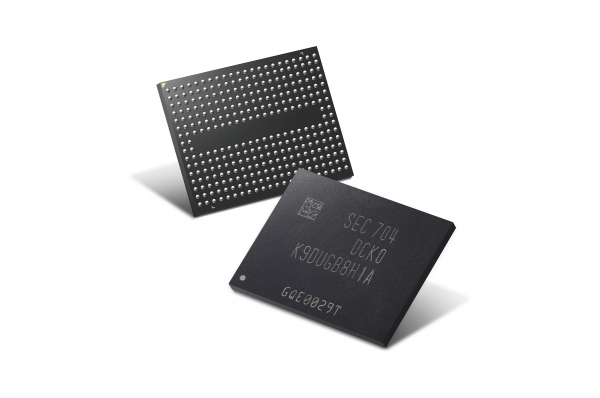
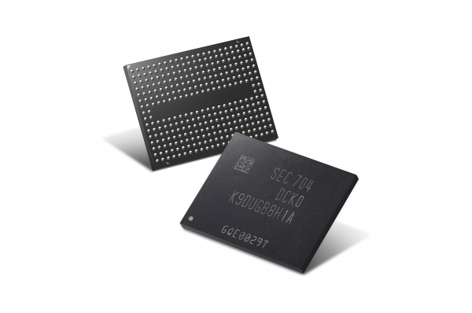

인공지능
반도체의 정의 |
|---|
|
 도체와 부도체의 중간영역에 속하는 것으로 필요에 따라 전류를 조절하는 데 사용된다. 반도체의 특성은 더해 준 불순물이나 첨가에 따라 달라지며 이렇게 다양한 특성들로 반도체는 현대 과학기술 문명의 중심이 되는 전기 전자산업에서 가장 핵심적인 요소를 구성하고 있다. |
반도체의 정의 |
|---|
|
 도체와 부도체의 중간영역에 속하는 것으로 필요에 따라 전류를 조절하는 데 사용된다. 반도체의 특성은 더해 준 불순물이나 첨가에 따라 달라지며 이렇게 다양한 특성들로 반도체는 현대 과학기술 문명의 중심이 되는 전기 전자산업에서 가장 핵심적인 요소를 구성하고 있다. |